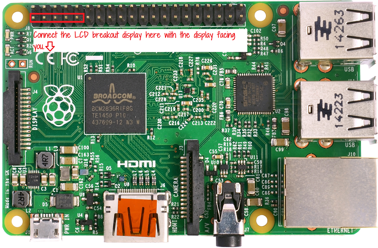
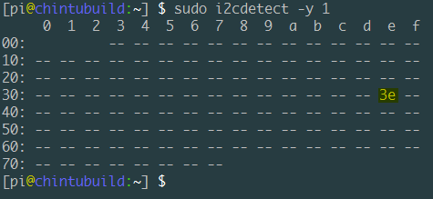
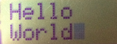

First steps with the aqm0802a LCD breakout module
Preparing your raspberry pi
I am assuming that you are using the Raspbian Jessie image and the raspberry pi model 2 B.
First, make sure that the i2c kernel module is enabled and is loaded. You can do this using
sudo raspi-config
-> going to Advanced Options
-> Enable I2C kernel module
-> Answer yes to "Would you like the ARM I2C interface to be enabled
-> Answer yes to "Would you like the I2C kernel module to be loaded by default"
Next ensure that you have the i2c-tools package installed, else install it using
sudo apt-get install i2c-tools
Connecting the aqm0802a based LCD module to the board
Connect the display to the raspberry pi header pins as follows:

(Note: the display module is hot pluggable - you can plug it in even when the raspberry pi is turned
on.)
The i2cdetect command - can the pi find the LCD module
Use the i2cdetect tool to detect the address of the LCD module and to make sure that the raspberry pi is able to find the display on the i2c bus.
First find the name of the i2c bus device using the following command:
sudo i2cdetect -l

Here we see that the device is named i2c-1. The part of this name that we want to use is the number at the end - in this case, '1'.
Next use that number with the i2cdetect command to scan the i2c bus:
sudo i2cdetect -y 1
(The -y switch makes the command run in non-interactive mode)

Here we see that the bus has been scanned - all 128 addresses (the first three and the last eight seem
to be reserved addresses)
and that the display has been detected at address 3e.
Initializing the display using i2cset
Next, use the i2cset command to send the initialization sequence to the display.
sudo i2cset -y 1 0x3e 0x00 0x38 0x39 0x14 0x70 0x56 0x6c i
sudo i2cset -y 1 0x3e 0x00 0x38 0x0d 0x01 i
i2cset is a small helper command to set registers visible through the I2C bus.
In the above commands: the first "1" is for the bus number:
- the first "1" is for the bus number
- the 0x3e is for the address of our display on the bus
- the '0x00' is for the address on the display to write to (when we are sending commands to the display, it seems that we need to write to 0x00)
- all the numbers between the 0x00 and the i in the end are the values to be written - the actual initialization commands.
- and the last 'i' is the mode parameter that specifies that we want to do a i2c block write.
This should give you a blinking cursor on the display.
Next, let us try writing something to the screen.
After having initialized the display, type in the following i2cset commands to write some text:
sudo i2cset -y 1 0x3e 0x40 0x48 0x65 0x6c 0x6c 0x6f i
This will write the characters Hello to the first line of the display.
Refer to the datasheet http://akizukidenshi.com/download/ds/xiamen/AQM0802.pdf
(which is in japanese, but the table of characters should be easy to understand if you compare the
row and column numbers with the data written in the above command (H - 0x48, e - 0x65, l - 0x6c, l -
0x6c, o - 0x6f))
Next, move the cursor to the second line -
sudo i2cset -y 1 0x3e 0x00 0xc0 i
And write the next line of text -
sudo i2cset -y 1 0x3e 0x40 0x57 0x6f 0x72 0x6c 0x64 i
This should give you a "Hello World" display:

Next clear the display with the following command:
sudo i2cset -y 1 0x3e 0x00 0x01